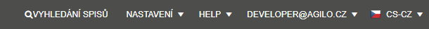
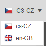

Multijazyčnost
Všechny uživatelské texty programu mají možnost změny textu dle vybraného jazyka - nadpisy, popisy polí, popisy částí SW, menu, funkce a tlačítka. V programu je možné vybrat libovolný jazyk, který si uživatelé nechají importovat do systému. Doplnění jazykové mutace je třeba řešit programově. Počet jazykových mutací je neomezené.

Přepnutí se provádí v menu v poslední položce pravého horního menu.

Při přepnutí do jiného jazyka se však nezmění generovaná i uložená data. Znamená to, že systém stále generuje informace v primárním jazyce.